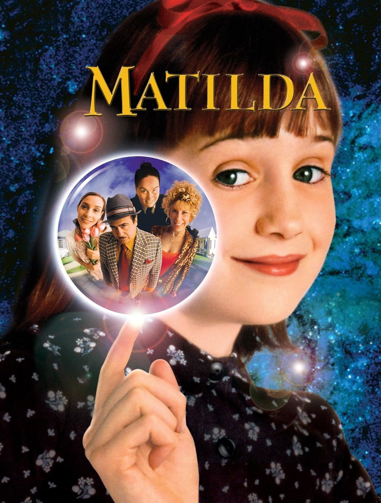

Matilda is a family comedy movie released in 1996 based on the book by Roald Dahl. The movie is about a very intelligent young girl named Matilda who discovers she has special powers. She uses her abilities to stand up against unfair adults, especially the scary principal Miss Trunchbull.

Contact Me: henryw6733@student.faytechcc.edu